Baking
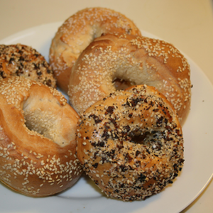Bagels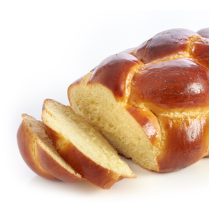Challah Fluffy Pancakes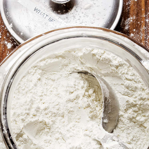Gluten-Free Flour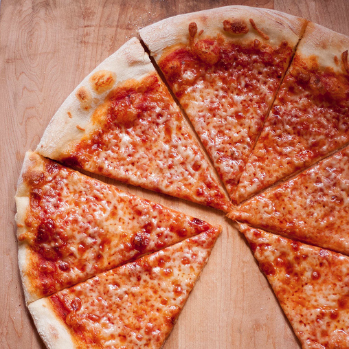Pizza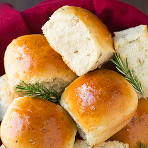Rosemary Dinner Rolls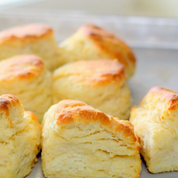Southern Buttermilk Biscuits
Fluffy Pancakes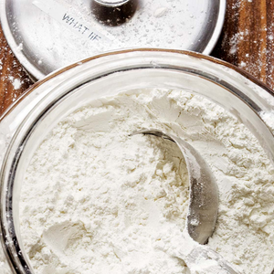Gluten-Free Flour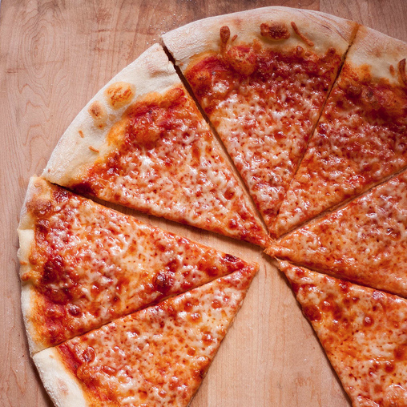Pizza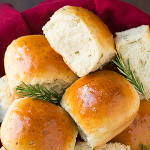Rosemary Dinner Rolls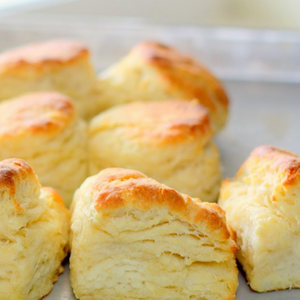Southern Buttermilk BiscuitsSoups
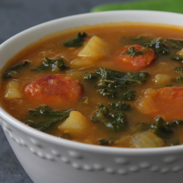Caldo Verde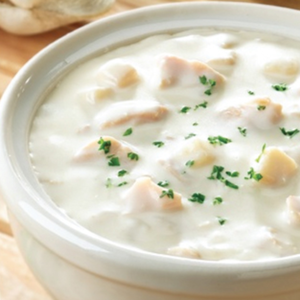Clam Chowder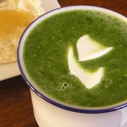Cream of Spinach Soup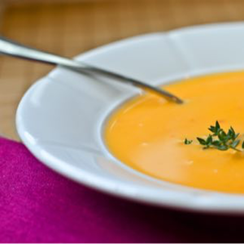Curry Butternut Squash & Apple Soup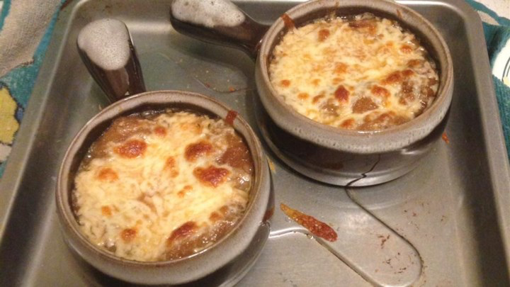French Onion Soup Hungarian Mushroom Beef Soup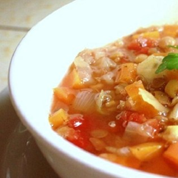Winter Lentil Soup
Hungarian Mushroom Beef Soup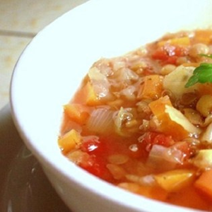Winter Lentil SoupSalads
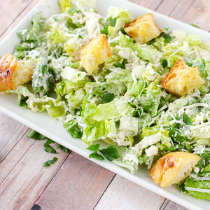Caesar Salad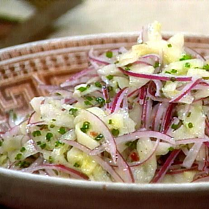Cucumber Salad Ruth's Chris Chopped Salad
Ruth's Chris Chopped SaladMain Dish
 BBQ Pork Ribs
BBQ Pork Ribs Beef Bourguignon
Beef Bourguignon Butter Chicken
Butter Chicken Chicken Cordon Bleu
Chicken Cordon Bleu Chicken Pot Pie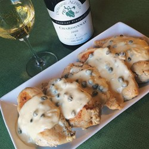Chicken Breasts with Caper Cream Sauce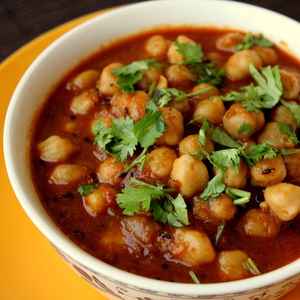Chole
Chicken Pot Pie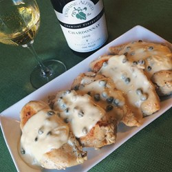Chicken Breasts with Caper Cream Sauce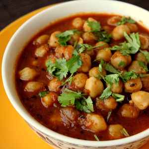Chole Garlic Prime Rib
Garlic Prime Rib Gnocchi
Gnocchi Kielbasa and Cabbage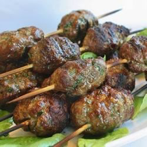Kofta Kebabs
Kielbasa and Cabbage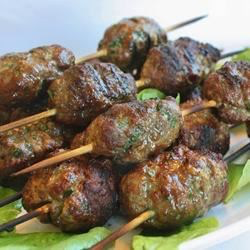Kofta Kebabs Lemon Chicken with Mushroom Sauce
Lemon Chicken with Mushroom Sauce Orange Chicken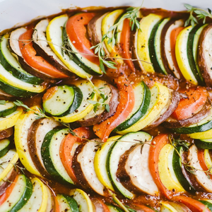Ratatouille
Orange Chicken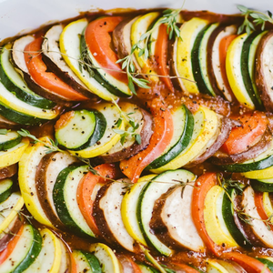Ratatouille Ricotta Meatballs
Ricotta Meatballs Roast Leg of Lamb with Rosemary
Roast Leg of Lamb with Rosemary Shrimp with Sweet Potatoes and Bacon
Shrimp with Sweet Potatoes and Bacon Sloppy Joe Sandwiches
Sloppy Joe Sandwiches Stuffed Green Peppers
Stuffed Green PeppersSides
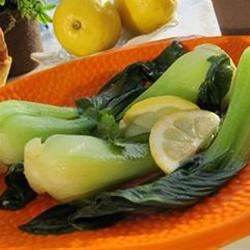Bok Choy with Garlic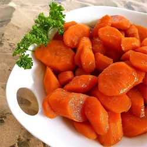Bourbon Glazed Carrots Creamed Spinach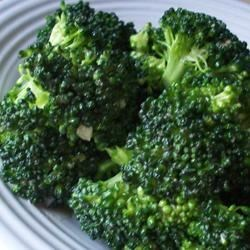Garlic Broccoli
Creamed Spinach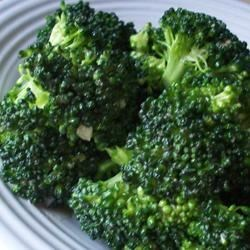Garlic Broccoli Hummus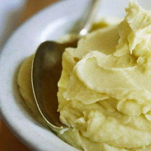Pommes Purée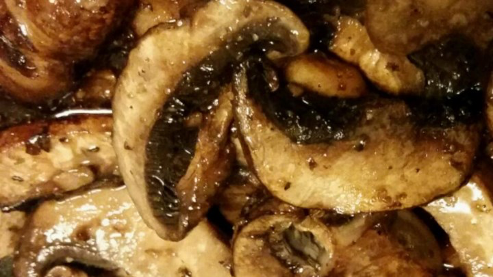Sauteed Mushrooms
Hummus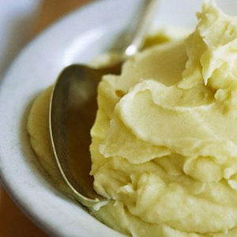Pommes Purée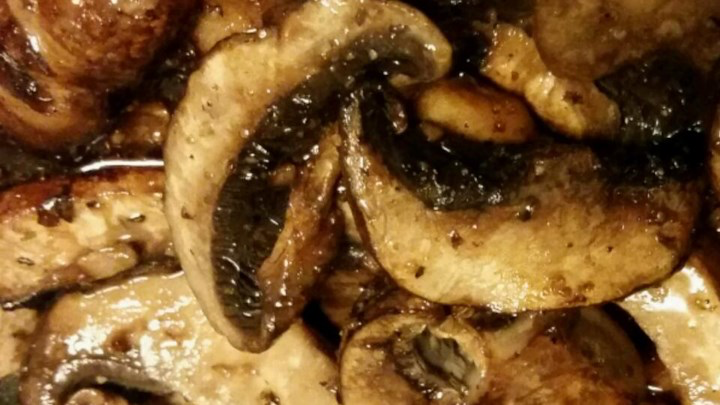Sauteed Mushrooms Sweet Potatoes with Honey and Rosemary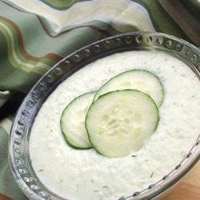Tzatziki
Sweet Potatoes with Honey and Rosemary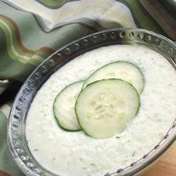Tzatziki